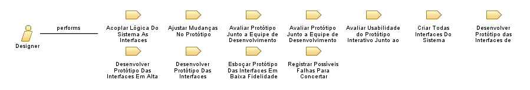

Role: Designer
Responsável pela arquitetura dos dados e toda a parte visual do projeto.
Relationships

Primary Performs
Acoplar Lógica Do Sistema As Interfaces
Ajustar Mudanças No Protótipo
Avaliar Protótipo Junto a Equipe de Desenvolvimento (Alta Fidelidade)
Avaliar Protótipo Junto a Equipe de Desenvolvimento (Média Fidelidade)
Avaliar Usabilidade do Protótipo Interativo Junto ao Cliente
Criar Todas Interfaces Do Sistema
Desenvolver Protótipo das Interfaces de Forma Interativa
Desenvolver Protótipo Das Interfaces Em Alta Fidelidade
Desenvolver Protótipo Das Interfaces Principais Em Média Fidelidade
Esboçar Protótipo Das Interfaces Em Baixa Fidelidade
Registrar Possíveis Falhas Para Concertar
Process Usage
Business Design Thinking
>
Prototipagem
>
Prototipação Em Baixa E Média Fidelidade
>
Designer
Business Design Thinking
>
Prototipagem
>
Prototipação Interativa E Em Alta Fidelidade
>
Designer
Business Design Thinking
>
Prototipagem
>
Desenvolvimento Das Interfaces Do Sistema
>
Designer
Business Design Thinking
>
Teste
>
Entrega Ao Cliente
>
Designer